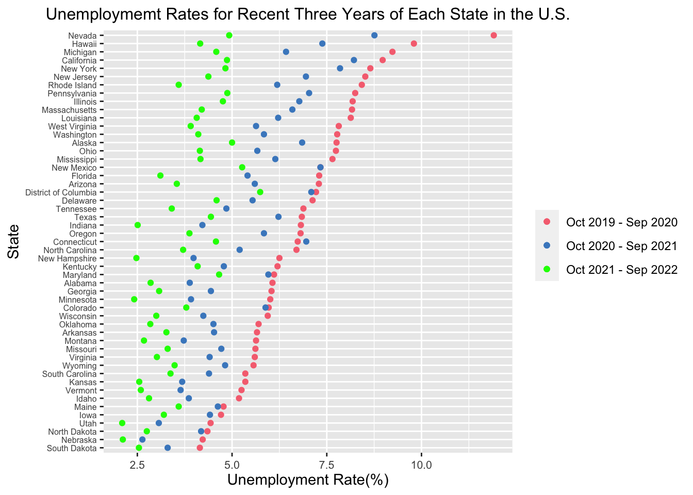

Chapter 4 Results
4.2 Unemployment Situation by State
4.2.1 Histogram

These three histogram graphs present the distribution of average unemployment rates of each state in the U.S. from October 2019 to September 2020, from October 2020 to September 2021, and from October 2021 to September 2022. The x-axis represents the average unemployment rate (%), and the y-axis represents how many states have such an unemployment rate. From October 2019 to September 2020, each state’s unemployment rate ranged from 3% to 12.5%, and most states had more than 5% unemployment rates. There was also a state with an average unemployment rate of over 11%. From October 2020 to September 2021, the average unemployment rate of most states ranged from 3.5% to 7.5%. It is obvious that the median of each state’s unemployment rate shifted left, compared to the previous 12 months, which indicates that the unemployed situation was alleviated to some extent. As for the period of October 2021 to September 2022, the median of each state’s unemployment rate shifted left further. Most states had decreased their unemployment rate below 5%, verifying that job markets recovered after the Covid-19 pandemic.
4.2.2 Cleveland Plot
This Cleveland dot plot exhibits the unemployment rates of each state in the United States during three different periods of recent 36 months. The red, blue, and green dots represent the average monthly unemployment rates from October 2019 to September 2020, from October 2020 to September 2021, and from October 2021 to September 2022. The states on the y-axis are ordered by the average monthly unemployment rates between October 2019 and September 2020. Due to the missing data on Puerto Rico, this graph does not include the unemployment rate data of this state. As this graph shows, in the last 36 months, all the states had the highest unemployment rates between October 2019 and September 2020, and approximately ten states reached more than a 7.5% unemployment rate during this period. These extremely high unemployment rates resulted from the burst of the Covid-19 pandemic, which hugely impacted various industries and caused many people to lose their jobs. During this period, Nevada had the highest unemployment rate of over 12.5% among all the states, while South Dakota had the lowest, which is around 4%. However, this difficult unemployed situation was gradually alleviated in the following 24 months. For most U.S. states, the average unemployment rates for the recent 24-12 months and the recent 12 months gradually decreased from October 2020 to September 2022, except for Connecticut. The average unemployment rate in Connecticut between October 2020 and September 2021 was even higher than that between October 2019 and September 2020. Until September 2022, most states had lowered their average unemployment rate for the recent 12 months below 5%.
4.2.3 Map
 The above maps show the geographical distribution of average monthly unemployment rates in the U.S. from October 2019 to September 2020, from October 2020 to September 2021, and from October 2021 to September 2022. The shade of color reflects the average unemployment rates during different periods. Deeper blue represents a higher unemployment rate, while lighter blue represents a lower one. We can see the most serious unemployed situations happened from October 2019 to September 2020 from the deeper blue across the U.S. because of the burst of Covid-19. During this period, Nevada had the highest average unemployment rate of over 10% since this state is colored with the deepest blue. In the following 24 months, the unemployment rates in most states gradually dropped as the color on the map gradually becomes lighter. The average unemployment rate from October 2020 to September 2021 in each state was lower than that from October 2019 to October 2020. Also, the average unemployment rate from October 2021 to September 2022 in each state was lower than that from October 2020 to October 2021. These three maps all reveal a pattern that in a specific period, western, southern, and southeastern states suffered more severe unemployed than states in the north and middle, as western, southern, and southeastern states are colored with deeper blue on the map than other states.
The above maps show the geographical distribution of average monthly unemployment rates in the U.S. from October 2019 to September 2020, from October 2020 to September 2021, and from October 2021 to September 2022. The shade of color reflects the average unemployment rates during different periods. Deeper blue represents a higher unemployment rate, while lighter blue represents a lower one. We can see the most serious unemployed situations happened from October 2019 to September 2020 from the deeper blue across the U.S. because of the burst of Covid-19. During this period, Nevada had the highest average unemployment rate of over 10% since this state is colored with the deepest blue. In the following 24 months, the unemployment rates in most states gradually dropped as the color on the map gradually becomes lighter. The average unemployment rate from October 2020 to September 2021 in each state was lower than that from October 2019 to October 2020. Also, the average unemployment rate from October 2021 to September 2022 in each state was lower than that from October 2020 to October 2021. These three maps all reveal a pattern that in a specific period, western, southern, and southeastern states suffered more severe unemployed than states in the north and middle, as western, southern, and southeastern states are colored with deeper blue on the map than other states.
4.5 Unemployment and CPI and GDP
4.5.1 Parallel Coordinate Plot

This parallel coordinate plot exhibits the relationship between the unemployed population, GDP, and CPI from January 2012 to October 2022. Each line represents a piece of monthly data on the unemployed population, GDP, and CPI. The data before 2020 is considered as the Pre-Covid period and labeled with green, and the data after 2020 (inclusive) is considered as the After-Covid period and labeled with red. All the unemployed population, GDP, and CPI data are standardized. Both before and after Covid-19, CPI negatively corresponded to the unemployed population. In other words, a higher CPI corresponds to a lower unemployed population and vice versa. However, during the past ten years, the several high CPI and unemployed population data were all from the After-Covid period. We can infer that the Covid-19 pandemic resulted in severe inflation and job loss, significantly impacting people’s lives. Moreover, the unemployed population also negatively corresponded to GDP in both Pre-Covid and After-Covid periods. That is, a higher unemployed population corresponds to a lower GDP. In the past ten years, most GDP values after Covid-19 were still higher than before Covid-19, indicating that generally speaking, GDP in the U.S. had grown gradually in the past ten years. However, due to the enormous impact of the Covid-19 pandemic, several pieces of GDP data were lower than some Pre-Covid GDP values and connected with high unemployed population data.